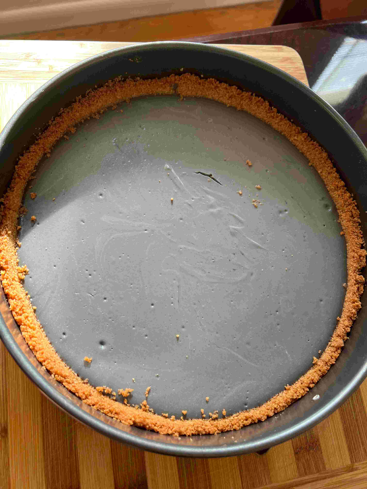

Black Sesame Cheesecake
Nuttiness meets richness to create a smooth, balanced flavor
Created: March 11, 2022
POV: It's Thanksgiving & I'm cutting a slice for you



Prep
2 hours 30 mins
Cook
1 hour 30 mins
Cooling Time
6 hours
Total
Whole frikken day
I have absolutely no idea! Please feel free to hit me up if you calculate this 😆